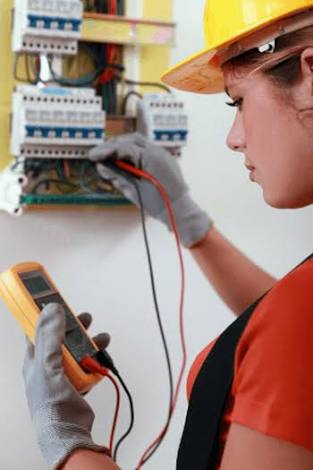

The system we have proposed is an extended approach to automating control system. The application of our system comes in handy when people forget to do simple things ON or OFF devices at their home or in their office; they can now do so without their presence by the transmission of a simple text message from their mobile phone. Technology has advanced so much in the last decade or two that it has made life more efficient and comfortable. Therefore, there arises a need to do so in a systematic manner, which we have tried to implement with our system. The system we have proposed is an extended approach to automating control system.
The system we have proposed is an extended approach to automating control system. The application of our system comes in handy when people forget to do simple things ON or OFF devices at their home or in their office; they can now do so without their presence by the transmission of a simple text message from their mobile phone. Technology has advanced so much in the last decade or two that it has made life more efficient and comfortable. Therefore, there arises a need to do so in a systematic manner, which we have tried to implement with our system. The system we have proposed is an extended approach to automating control system.
The system we have proposed is an extended approach to automating control system. The application of our system comes in handy when people forget to do simple things ON or OFF devices at their home or in their office; they can now do so without their presence by the transmission of a simple text message from their mobile phone.
Residential Services The system we have proposed is an extended approach to automating control system. The application of our system comes in handy when people forget to do simple things ON or OFF devices at their home or in their office; they can now do so without their presence by the transmission of a simple text message from their mobile phone.